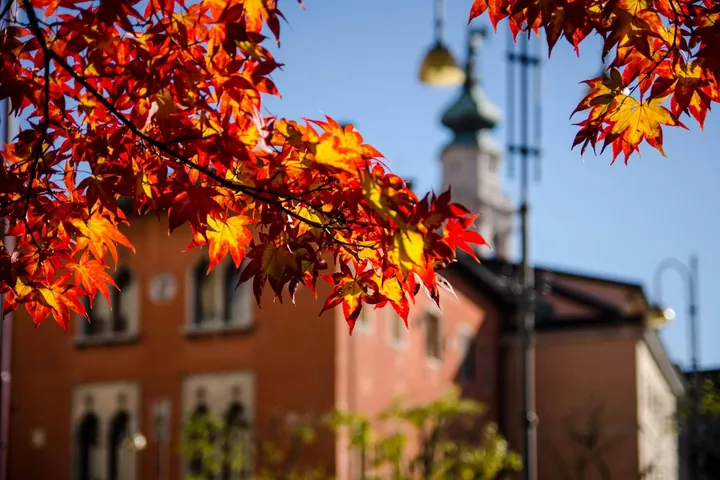

da gio 15 ott a dom 25 ott
Tracce di Foliage
La quarta edizione della rassegna Tracce di foliage ci porta dritti nel vortice caotico delle foglie che cadono. Con “Fogli(e) d’autunno” l’attenzione è tutta per loro, elemento naturale ricco di significati, capace di accompagnare le riflessioni autunnali, quando i colori che…
 Indicazioni
Indicazioni
- Costi e prenotazioni
- Costo non indicato · Prenotazione non indicata
- Programma
- Programma da verificare. Apri la fonte ufficiale per orari e possibili aggiornamenti.
- In caso di maltempo
- Nessuna indicazione specifica pubblicata.
- Note
- Acquisito automaticamente dalla fonte.
L’EVENTO
Descrizione completa
La quarta edizione della rassegna Tracce di foliage ci porta dritti nel vortice caotico delle foglie che cadono. Con “Fogli(e) d’autunno” l’attenzione è tutta per loro, elemento naturale ricco di significati, capace di accompagnare le riflessioni autunnali, quando i colori che prendono il posto del verde solleticano emozioni e pensieri.
Protagoniste sono le foglie, che cambiano colore, si staccano dai rami e si lasciano trasportare dal vento. Il loro cadere racconta il cambiamento, l’abbandono, il lasciar andare: luoghi forse faticosi da abitare, ma che nel loro caos ci spingono a cercare argini, relazioni e nuovi significati. Il foliage diventa così occasione per trasformare le foglie in fogli : superfici sulle quali scrivere, disegnare, appuntare, ma anche spartiti musicali. La memoria diventa futuro attraverso la scrittura, la lettura, il disegno e la musica, in un intreccio di esperienze che attraversa il bosco e il territorio bellunese.
Andremo nel bosco per osservarne le metamorfosi, scopriremo i suoi abitanti e impareremo a disegnare su un taccuino di viaggio e a fabbricare un foglio di carta. Con Giacomo Moro Mauretto, alias Entropy for Life, conosceremo i segreti delle piante e, giocando, esploreremo il mondo degli organismi monocellulari.
La rassegna aderisce inoltre a “Il Veneto legge” , con una lettura a voce alta dedicata alla montagna, e propone gustose merende con prodotti locali e antiche ricette bellunesi. A chiudere sarà una performance di voce, tastiera e chitarra in un luogo “segreto” di Belluno.
Tracce di foliage torna così a invitare a rallentare, osservare e lasciarsi attraversare dal caos delle foglie: perché anche una foglia che cade può diventare una traccia, una storia, un nuovo inizio.
IL PROGRAMMA
Programma e orari
Appuntamenti raccolti dalle fonti elencate. Dove manca un orario, non è ancora disponibile in questa scheda.
Programma pubblicato
- 2026-10-15 — 2026-10-25 ·
INFORMAZIONI UTILI
Prima di partire
- Controllare la fonte prima di partire.
ORGANIZZAZIONE